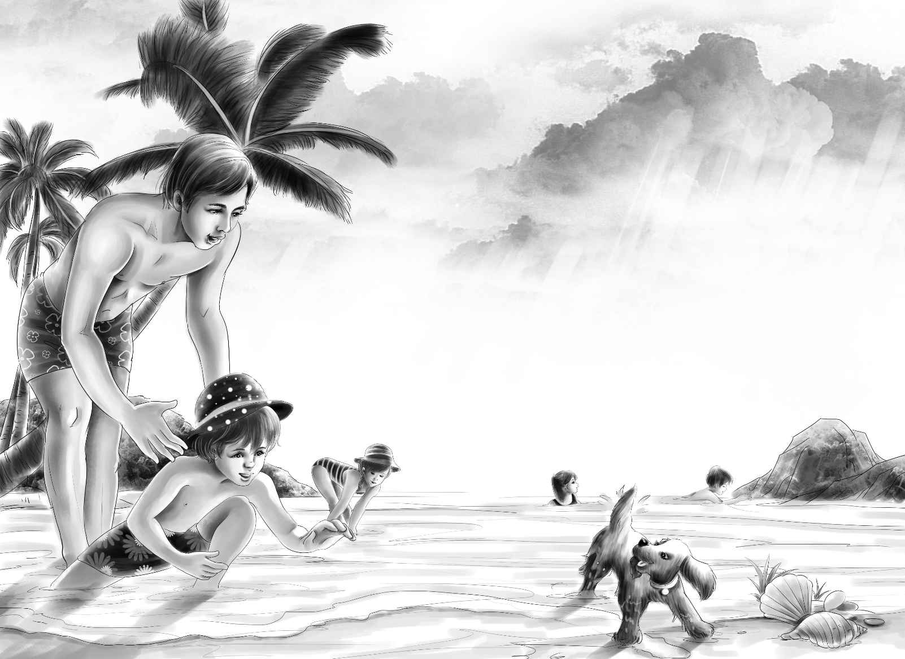

Clamming
孩子们穿过岸边的草地，在沙滩上坐了下来。
“杰西，你看那个！”班尼指着不远处叫了起来，话音未落，只见一条水柱从细沙里喷射而出，亨利已无暇欣赏这漂亮的喷泉，他一边叫着“是蛤蜊”，一边一跃而起，捡了根木棍，在喷泉旁的沙地上开挖起来。其他几个孩子和望望全都被吸引过去，眼看着亨利从潮湿的沙坑中挖出了一只活蛤蜊。
“噢，要是有铲子就好了！”亨利激动地叫道，“这儿有好多蛤蜊。看那个坑，还有那个！”
“咱们赶紧回去拿两把大勺子和洗碗盆过来吧！”杰西建议道，于是两人飞快地跑回去取工具，留班尼和维莉继续用棍子在沙滩上挖着玩。等到他们回来时，发现班尼又挖到了一只蛤蜊。
“这只我要留着，”班尼满意地说，“紫色的蛤蜊可真漂亮。”
“把你挖到的宝贝都放到这口锅里吧，班尼！”杰西将深底锅递给了他，“不过等你尝过了蛤蜊的美味之后，就不会想留着它们了。”
孩子们纷纷脱下鞋子，准备大干一场。
“这儿还有一个！”班尼大叫道，“我都快忙不过来了。”
望望似乎心领神会。它静静地蹲在那儿，看着班尼用棍子挖了一会儿，也开始用爪子刨了起来。
“好望望！”班尼说，“喜欢的话，我就让你来挖好啦，我来帮你捡蛤蜊吧。”小狗似乎明白了班尼的话，它候在一边，班尼一找到蛤蜊的位置，它就奋力地刨了起来。两个大孩子看到望望爪下沙土飞扬的样子，忍不住笑了起来。不一会儿，锅里的蛤蜊越来越多，孩子们兴奋极了。
“把它们留着明天吃吧！”亨利又将一只蛤蜊扔进了锅里。
“好的，”杰西说，“把它们养一晚上应该没事，咱们可以用海藻将它们盖起来。”
“这么多蛤蜊应该够了。”亨利看了看锅里，接着走进海水里，拔了许多湿淋淋的海藻上来，将它们小心翼翼地铺在蛤蜊上面。
“我好想知道那个岬角后面有什么，”他说，“咱们去看看吧。”
“我们现在要去探险啦，班尼，”维莉说，“你可得把双眼睁大了哦！”
绕过岬角时，班尼的眼睛果然睁得大大的。只见岸边的浅水中，有一张小小的木筏。
“噢，我知道了，这个地方是爷爷专门修了给咱们游泳的！”班尼得意地说。
“绝对是他修的！”亨利说，“这儿的水位还没我高，不过用来游泳是足够了。”
孩子们探险回来时才三点钟，于是大家一致决定换上泳衣去海里游泳。
来到沙滩上，他们一起向浅水跑去。
“好冰啊！”班尼立刻缩回了脚，“我还是喜欢暖和的水。”
“你得把整个身子都浸到水里去！”杰西笑了起来，“像亨利那样做，你就会很快适应了。”

只见亨利迅速地钻进水里，双手交替，噼里啪啦地游到了木筏上。望望也跟在他身旁一起游了过去。
“感觉好极了！”亨利坐在木筏上喊道，“快点过来，杰西。”
“好的，等我先把班尼劝下水！”她大声回答道，“你要是不把身上打湿，会一直觉得很冷的，班尼。”可是班尼死活也不愿意下去，只是穿着泳衣坐在岸边，朝水里扔着石头。维莉只好留在岸边陪班尼，在浅水里寻找着海藻。杰西见状，便自己向小木筏游去。
正当杰西和亨利坐在小木筏上，踢着脚下的浪花时，一个小伙子向他们走了过来。
“是大乔！”亨利说。果真是大乔，他也穿着泳衣。
亨利看到大乔沿着沙滩走了过来，坐到了班尼身旁。
“今天的水怎么样？”大乔问道。
“冷死了，”班尼抱怨，“就像是冰水一样。”
“那是因为你还没有完全下水的缘故吧！”大乔笑道。
“对，杰西也是这么说的。”班尼说。
“那是岩藻。”见维莉捡起了一把长长的棕色海藻，大乔冷不丁开口说道，“这附近有不少漂亮的海藻。看到沙滩上深绿色的海藻了吗？它们还有红色的呢！瞧，那边的海浪里就是！”说完，大乔跳进水中，维莉则紧跟着他。
“噢，海藻不见了！”她喊道，“真可惜没抓到。”
此时，班尼已经站起身，目不转睛地盯着海浪，连海水冲打上他的脚面都没察觉到。红色海藻随着海浪上下起伏，班尼也情不自禁地跟着追逐起来。
“我抓到啦！”他大声喊道。没错，他手里抓着的，正是红色海藻，而此时他的全身也湿透了。
“好样的，班尼！”大乔微笑着说，“让我看看你的海藻吧！”
“给。”班尼将海藻递给了大乔。他丝毫没有意识到，自己正站在所谓的“冰水”之中。
“嘿，我有个好主意！”大乔说，“将海草在水中像这样涮一下，再捞起来，放到一张写字用的白纸上面，把它们柔软的枝叶全都展开，再用别针固定住……”
“这样海藻就能粘到纸上了吗？”维莉问。
“没错，”大乔说，“海藻里有一种特别的物质，会让它干了之后粘在纸上。到时候，你们就可以用这种纸来写信啦。”
“噢，这主意我喜欢！”维莉叫道，“不过我也想收集一些海藻！”
“好呀！”亨利和杰西游了过来，想看看这边到底发生了什么，“你还可以把海藻的名字都记下来，做成一本小册子。”
“这可能有点难哦，海藻可没有那么多通俗名称。”大乔说。
“你知道的可真多，大乔。”班尼说。
其他三个孩子也有同感，因为他们已经看到大乔是如何聪明地将班尼引到水中，并让小家伙不知不觉地在水中玩了起来。
当他们换好衣服，坐下来吃晚饭时，亨利还在想大乔的事。一直到睡觉，他仍念念不忘：“大乔可真是一个奇怪的帮工，居然知道那么多不同种类海藻的名字。”